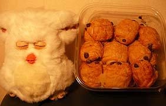

|
■2007/02/15/(Thu)21:26
チョコラ
|

COSTCOのミニパン・オ・チョコラがんまい。
ネット上で「美味しい！あっという間に無くなる！」とゆーよーな感想が多いこのパン。んなことあるかー！と思ってたらホントにあっという間になくなりそうな勢い。
発酵バターを使っているらしくて（しかもフランスAOCバター）風味もいいし、チョコの甘さ加減も好み。ちょっとトースターなんかであぶったりするとサクサクほわほわ。
しかも1コが小さいからついつい手が伸びるとゆーかっぱえびせん状態。
次回はクリスピークリームより美味しいと評判のドーナツにチャレンジしますよ。
|
|
|